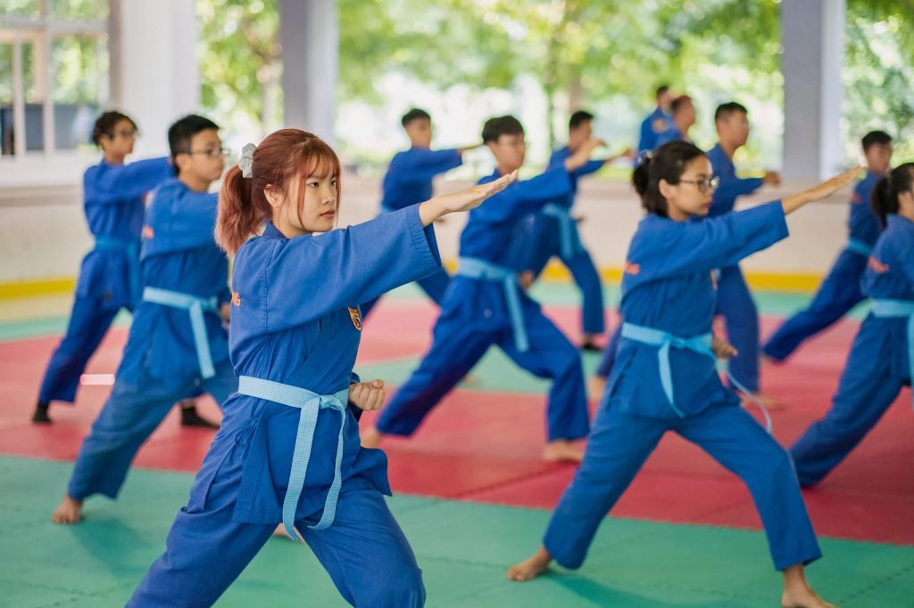
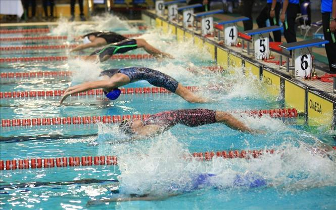
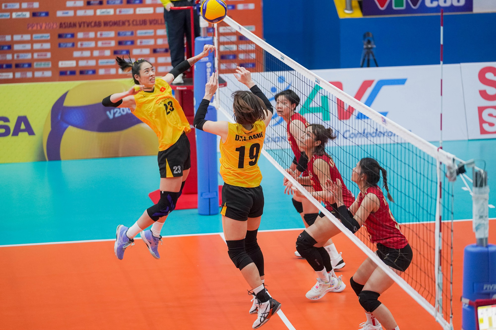

Thông tin của các CLB
Câu lạc bộ Võ thuật
CLB Võ thuật là nơi dành cho những bạn yêu thích rèn luyện thể lực, phản xạ và sự kỷ luật. Thành viên được học các kỹ thuật cơ bản đến nâng cao, rèn sự tự tin và khả năng tự vệ an toàn. CLB thường tổ chức tập luyện định kỳ, giao lưu biểu diễn và tham gia các giải thể thao của trường.

- Địa điểm: Sân đa năng phía sau nhà A
- Số thành viên: 45
- Thành tích: Giải Nhì Hội Khỏe Phù Đổng cấp quận (2024)
- Phí hội viên: 50.000đ/tháng
- Liên hệ: 0901 234 567
Câu lạc bộ Bơi lội
CLB Bơi lội phù hợp cho học sinh muốn rèn sức bền, nâng cao kỹ thuật bơi và kỹ năng an toàn dưới nước. Thành viên được hướng dẫn bởi thầy cô có kinh nghiệm, tham gia kiểm tra tốc độ và thi đấu giao hữu.

- Địa điểm: Hồ bơi mini của trường
- Số thành viên: 32
- Thành tích: 3 HCV giải bơi học sinh cấp thành phố (2023–2024)
- Phí hội viên: 70.000đ/tháng
- Liên hệ: 0902 888 001
Câu lạc bộ Bóng đá
CLB Bóng đá là môi trường năng động cho những bạn đam mê sân cỏ. CLB gồm các buổi tập chiến thuật, kỹ thuật và thi đấu nội bộ. Thành viên có tinh thần đoàn kết cao và thường xuyên thi giải học sinh.

- Địa điểm: Sân bóng cỏ nhân tạo cạnh cổng sau
- Số thành viên: 60 (2 đội nam, 1 đội nữ)
- Thành tích: Vô địch giải bóng đá học sinh quận (2024)
- Phí hội viên: 40.000đ/tháng
- Liên hệ: 0913 456 789
Câu lạc bộ Bóng chuyền
CLB Bóng chuyền tập trung vào rèn luyện kỹ thuật như đập bóng, chuyền bóng và chắn bóng. Không khí luyện tập vui vẻ, thân thiện, giúp học sinh nâng cao sự nhanh nhẹn và phối hợp nhóm.

- Địa điểm: Nhà thể chất
- Số thành viên: 38
- Thành tích: Top 4 giải bóng chuyền học sinh thành phố (2024)
- Phí hội viên: 30.000đ/tháng
- Liên hệ: 0934 222 900
Câu lạc bộ Bóng rổ
CLB Bóng rổ dành cho những bạn thích vận động và muốn tăng khả năng xử lý bóng, tốc độ và phản xạ. Thành viên thường xuyên thi đấu giao hữu và tham gia các giải liên trường.

- Địa điểm: Sân bóng rổ trước nhà thi đấu
- Số thành viên: 50
- Thành tích: Hạng Ba giải bóng rổ học sinh liên trường (2023–2024)
- Phí hội viên: 40.000đ/tháng
- Liên hệ: 0977 999 111
Quay về trang chủ